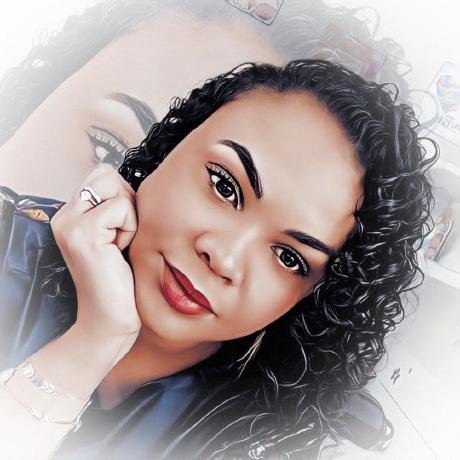

Quem Somos
Somos especializados em gerar soluções em software e web para s seu negócio. Contamos com estratégias voltadas às necessidades de cada um de nossos clientes, buscando através de uma comunicação integrada e muita tecnologia, oferecer novas e eficientes soluções digitais. Temos compromisso com o nosso trabalho e estamos dispostos a propagar essas ideias, reforçando cada vez mais a interação entre pessoas por meio da internet e da tecnologia. Promovendo a transformação digital dos nossos clientes. Contamos com um time de profissionais qualificados, com vasta experiência no planejamento, criação, desenvolvimento e gestão de projetos digitais, com proficiência em diversos segmentos. A Future4 Tech é uma empresa focada em transformação e inovação!
Equipe
Edson Cesari
Edson, CEO e Cofundador da Future4 Tech, Doutor em Engenheira de Software, formado pela renomada Instituição Americana, a High School Music. Vasta experiência na área de planejamento de grandes Projetos.
Adriana Augusto
Adriana, Cofundadora da Future4 Tech, Engenheira Sr. Em Gestão e Sistema de Informação, formada pela escola milenar da Pensilvânia, a Salvatore Academy. Vasta experiência em integração e gerenciamento de sistema de TI.
Daniel Galdino
Daniel, Cofundador da Future4 Tech, Gerente de Projetos Sr. (Projetos e Desenvolvimento), formado em Ciência de Dados pela premiada Academia inglesa, a Hogwarts Academy. Com mais de 10 anos de experiência na área em desenvolvimento de soluções digitais.
Jeane Magalhães
Jeane, Cofundadora da Future4 Tech, Engenheira Sr. em Controle e Automação, formada pela Universidade japonesa Nagoya University. Com mais de 5 anos de experiência projetos urgentes e contingentes em TI .